[N-World Contents] [Book Contents] [Prev] [Next] [Index]
Dynamic Operations
This chapter describes the various operations available in N-Dynamics to animate skeletons, skins, and attached objects.
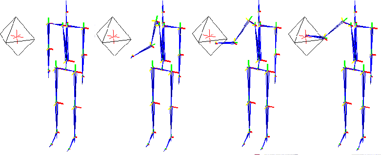
Skeletal Animation and N-Dynamics
N-Dynamics devotes an entire class of operations to the Skeletal Animation System. The basic concepts behind N-Dynamics are described in the N-Dynamics Reference Manual and N-Dynamics Tutorial; it is an animation choreographer, and is an ideal tool for animating and working with skeletons and motion capture data.
This chapter assumes you have some familiarity with both N-Dynamics and N-Geometry.
Skeletal Operation Order in N-Dynamics Scripts
As with any other N-Dynamics script, scripts containing skeletal operations execute from top to bottom, moving right at each frame. There are two types of skeletal operations in N-Dynamics:
Figure 3.1 When skeletal operations update the skeleton
Any of the changes described by the operations in the "Applied Later" column of Figure 3.1 are applied to the skeleton using the Update Skeleton operation.
There are two ways to organize your skeletal operations in a script:
Figure 3.2 Left, operations in a script arranged in a linear fashion; right; the same operations arranged hierarchically
The method shown on the right in Figure 3.2 is generally easier to work with, although both are completely acceptable. Also, if you create an Update Skeleton parent channel and specify the skeleton to update before inserting subchannels, any subchannel specified automatically assumes you want to update the same skeleton, and defaults to the same skeleton.
If you're animating more than one skeleton, you'll need to include an Update Skeleton operation for each of them.
If you don't include the Update Skeleton operation, your script will execute, but none of the operations specified in the left column in Figure 3.1 will appear to have an effect.
Operations
To best understand how these operations work, create a new script with at least one subaction (as described in the N-Dynamics reference manual. (CLICK-M) on the channel, then (CLICK-L) on the text box next to Operation. The Dynamic Operation Class menu is displayed.
In the Geometry module, (CLICK-L) on Skeleton Animation to display the skeletal animation operations:
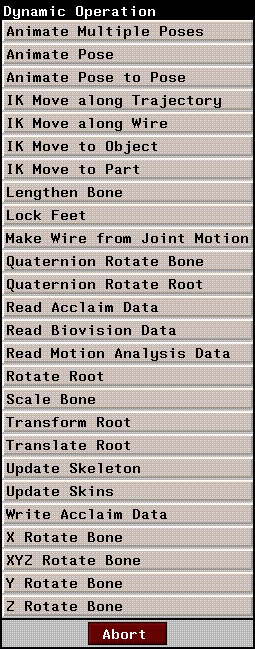
Figure 3.1 N-Dynamics skeletal animation operations
(CLICK-L) on an operation to assign it to the current channel. Each of these operations is described in more detail below.
Animate Multiple Poses
Animate a skeleton layering multiple poses. You specify the poses you want to use to animate the skeleton.
This operation creates dynamic value channels for each pose selected. The value of the pose is dynamic over the length of the channel:
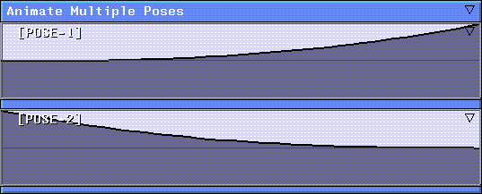
Figure 3.2 Animate Multiple Poses layers several poses over one another; each pose is dynamic
The Animate Multiple Poses operation should come before the Update Skeleton operation.
Animate Pose
Animate the skeleton to a single pose. You need to specify the skeleton to be animated and its target pose. The value for the pose is dynamic.
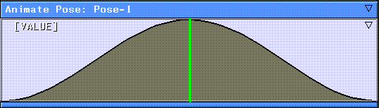
Figure 3.3 Animate Pose animates the skeleton to a single pose
The Animate Pose operation should come before the Update Skeleton operation.
Animate Pose to Pose
Animate the skeleton using a number of poses. The poses can be previously named poses or you can copy the skeleton's current pose interactively from N-Geometry into a selected cue.
In the [POSE] channel, you insert cues wherever you want the skeleton to hit a target pose:
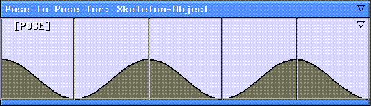
Figure 3.4 Animate Pose to Pose moves animates from one pose to another
(CLICK-M) on a cue to specify the target pose for that cue; a list of poses saved for the skeleton is displayed:
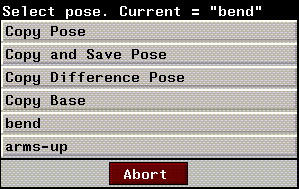
Figure 3.5 Selecting a pose to associate with a cue
Making the Pose value Dynamic
Note that by default, Value is local, with a value of 1.0 (the skeleton animates from one target pose to another). If you make Value dynamic, you can create cues in the Value channel for each pose, then insert a marker track to tie the two cues together.
You should do this before you insert any cues in the Pose channel:
1. In the Edit Action Properties dialog box, (CLICK-L) on Source and choose Dynamic Value for Value.
2. (CLICK-L) on Do It.
3. (CLICK-R) on the Animate Pose to Pose channel and choose Add Marker Track.
4. (CLICK-L) in several positions along the track where you'd like to insert cues.
- Note that cues are inserted into both the Pose and Value channels. Each of these cues is tied to its corresponding marker on the marker track.
5. Open the Pose and Value channels in the script editor.
6. (CLICK-M) on the first cue you inserted in the Pose channel.
- You're prompted to select the target pose for that cue.
7. (CLICK-M) on the first cue you inserted in the Value channel.
- Adjust the value for the cue using the sliders and controls in the Adjust Parameter Value dialog box:
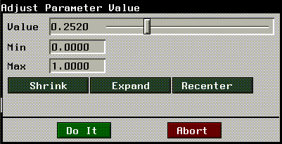
Figure 3.6 Adjusting the value for a cue
- As you adjust the slider, the skeleton is updated in the N-Geometry window.
After adjusting the cues and values, the Animate Pose to Pose channel will look something like this:
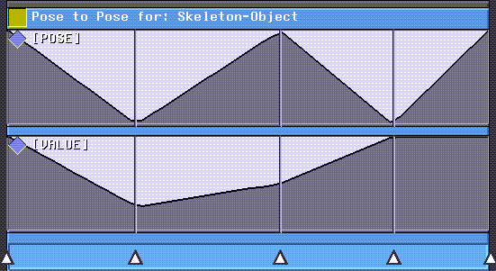
Figure 3.7 Animate Pose to Pose with dynamic values
Now, both the cue and its value can be dragged left or right by sliding the marker tied to those cues.
Using Animate Pose to Pose with Motion Capture Data
The Animate Pose to Pose operation can be used in conjunction with the various "read motion capture data" operations.
This means that you can start with a skeleton that has a basic "look-and-feel" and "customize" it by defining poses that are "layered" on top of the motion capture data in a separate channel.
You could, for example, add an Animate Pose to Pose that makes the skeleton turn its head toward the camera. If you layered this together with a channel that animated the skeleton through a walk cycle, the skeleton would go through the walk cycle, but would also turn toward the camera when the appropriate cue was reached! This technique is called "difference posing," and is described in more detail in the Skeletal Animation System Tutorial.
IK Move along Trajectory
Moves a node on the selected skeleton along a trajectory created in N-Geometry.
This is similar to IK Move along Wire, except that the selected joint moves to a position along the trajectory specified as a dynamic value (Fraction). A value of 0.0 is the beginning of the wire, a value of 1.0 is the end of the wire.
For example, to move smoothly along the trajectory, you could use a dynamic value for Fraction that was a linear curve with a start value of 0.0 and an end value 1.0.
The IK Move along Trajectory operation should come after the Update Skeleton operation.
IK Move along Wire
This operation causes a selected joint to follow the path of a specified wire. The IK Move along Wire operation can be layered over motion capture data to fine tune the motion of your character.
To use this operation you'll typically perform the following steps:
1. Generate a wire for the selected bone joint(s) using the Make Wire from Joint Motion operation.
- Note. It's generally a good idea to generate motion from a joint with limited degrees of freedom, such as a wrist or ankle (both of which are typically limited to X rotations). This will produce a straighter wire than a bone with more degrees of freedom.
2. Modify the wire in N-Geometry.
- For example, if you wanted the skeleton in Figure 3.8 to step higher, you could modify the wire generated from the right toe as shown:
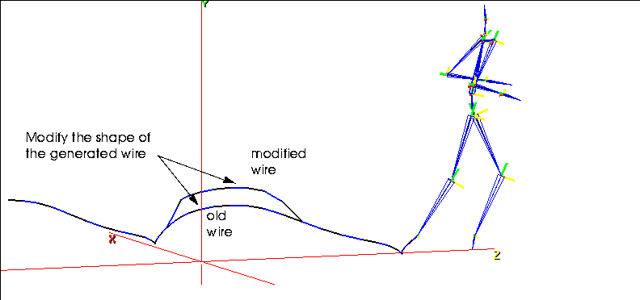
Figure 3.8 Modifying a generated wire for an IK Move along Wire operation
3. Set up the degrees of freedom for the joint being moved along the wire.
- Only the bones whose motion you want to be affected by the IK Move along Wire should have degrees of freedom enabled.
- If you don't set this up ahead of time, you're prompted to define the degrees of freedom for the bone when you try to animate the script.
4. With Points selected in the Sensitivity element menu, (SHIFT-L) on the joint being moved along the wire.
- For this example, choose the joint at the bottom of the tibia.
5. (CLICK-L) on IK Set.
- For example, if we want to adjust the motion of the joint along the wire, but want that adjustment to be made only by modifying the position of the tibia and femur, we'd use an IK Set that looked like this:
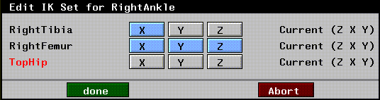
Figure 3.9 IK Set for joint moving along wire
- (Note that the tibia is constrained to movement in the X plane (to simulate movement around the knee joint)).
- Note. If you don't limit the degrees of freedom appropriately for this operation, your skeleton might jerk from frame to frame as each IK move is performed. Make sure the appropriate bones are included in the IK Set for the joint being animated along the wire.
In a script using this operation, you'd have a Read Biovision Data or Read Acclaim Data, followed by an Update Skeleton operation. After the Update Skeleton operation, you'd insert the IK Move along Wire operation.
When you reanimated, the joint would follow (as closely as possible, within the limits of the IK solve) the path described by the modified wire:
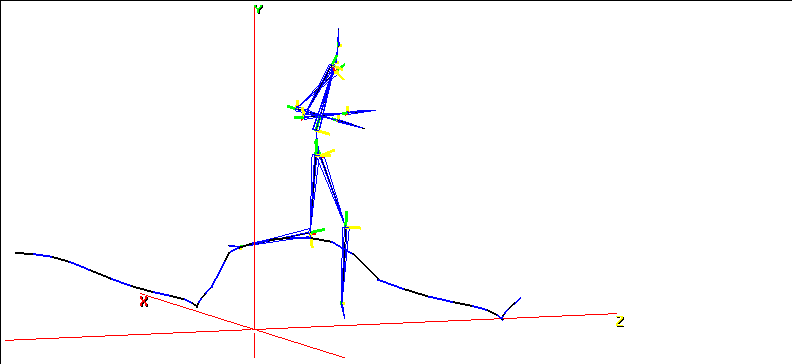
Figure 3.10 The IK Move along wire makes the specified joint follow the new path
- Note. The IK Move along Wire operation should come after the Update Skeleton operation.
IK Move to Object
Moves the selected joint on a skeleton toward an object using a specified IK set. What the IK move looks like depends on the IK set defined for that joint.
Suppose, for example, you wanted a character to reach for an object with his right hand. You might want to set up an IK set that let him move his hand and arm bones in any direction, but his right collarbone only around the Y axis:
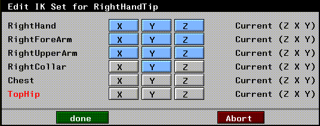
Figure 3.11 A typical IK Set for a Move to Object operation
By default, the operation moves the specified joint to the center of the specified object. In the example below, the skeleton is reaching for the center of the octahedron object (indicated by the local axes):
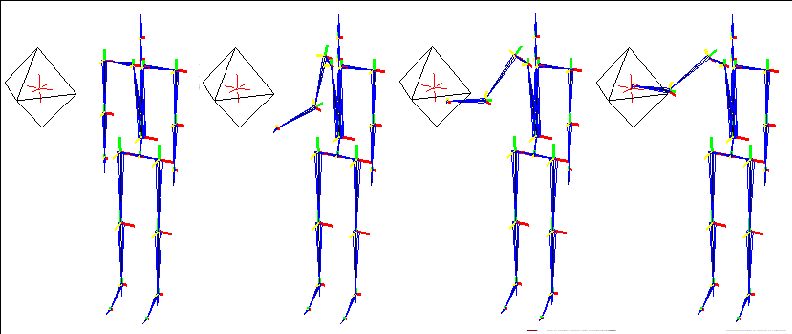
Figure 3.12 An IK Move to Object operation; the skeleton reaches for the object using the IK Set in effect
The IK Move to Object operation should come after the Update Skeleton operation.
IK Move to Part
Similar to IK Move to Object, except that the specified target is a skin part.
This operation could be used, for example, to make a character raise his hand to his chin.
Note, however, that the part specified need not be on the skin attached to the skeleton. You could also use this operation to make a skeleton reach toward a doorknob on a door or a steering wheel on a car, as long as those elements were specified as parts on their respective objects.
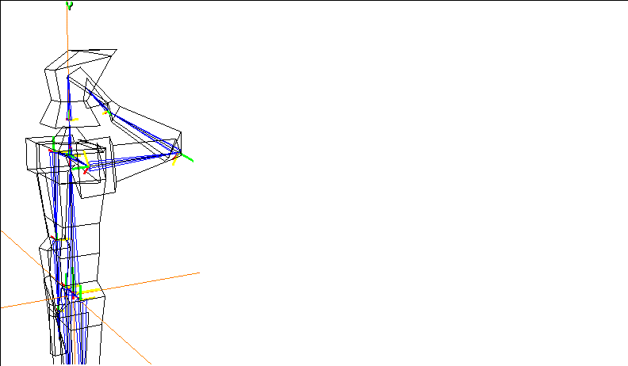
Figure 3.13 An IK Move to Part operation
The IK Move to Part operation should come after the Update Skeleton operation.
Lengthen Bone
Stretches an individual bone, either to a specified length (using Set), or by a specified length (using Add). This technique can be used on several bones to create cartoonish effects, as described in the Skeletal Animation System Tutorial.
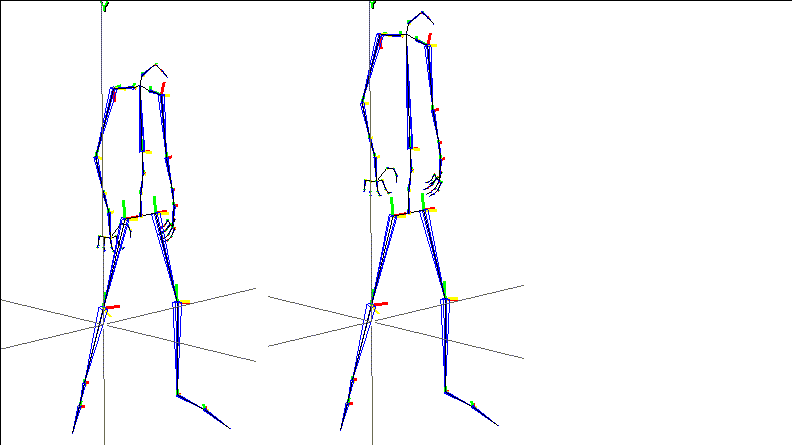
Figure 3.14 Lengthening a bone
The Lengthen Bone operation should come before the Update Skeleton operation.
Lock Feet
This operation can be used to lock feet from frame to frame. The operation locks the X and Z motion of the lowest joint on the skeleton to its position in the previous frame (usually, the foot on the ground in a walk cycle).
You can define an imaginary plane to define the "ground" using the Lock Height variable; even though in a walk cycle, the foot is approximately at 0, you may want define a maximum height at which that lowest joint is still assumed to be on the ground. Locking the feet is typically necessary if the scale of the skeleton and the motion capture data don't match exactly.
The Lock Feet operation should come after the Update Skeleton operation.
[N-World Contents] [Book Contents] [Prev] [Next] [Index]
 Another fine product from Nichimen documentation!
Another fine product from Nichimen documentation!
Copyright © 1996, Nichimen Graphics Corporation. All rights
reserved.